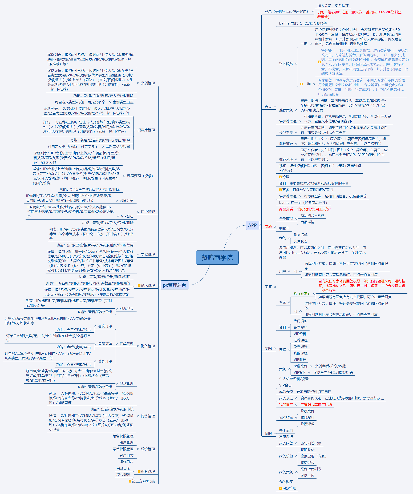

我的第一个标题
h2 标题
h3 标题
我的第一个段落
baidu

center 标题
This is
a para
graph with line breaks
春晓
春眠不觉晓，
处处闻啼鸟。
夜来风雨声，
花落知多少。
This is heading
This is paragraph
A heading
A paragraph
This is text-align:center
This text is bold
This text is strong
This text is big
This text is emphasized
This text is italic
This text is small
This text contains
subscript
This text contains
superscript
这是
预格式文本。
它保留了 空格
和换行。
pre 标签很适合显示计算机代码：
for i = 1 to 10
print i
next i